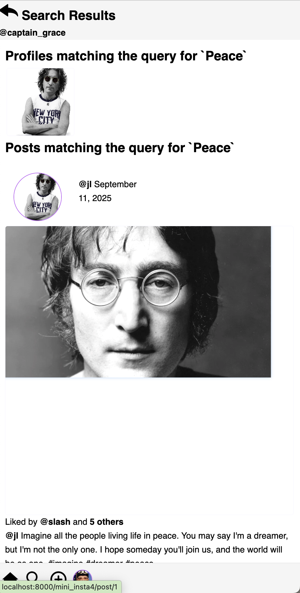

Assignment 6: Using the Object Relational Manager
due by 9:00 p.m. EDT on Friday 10/17/2025
Learning Objectives
After completing this assignment, students will be able to:
-
Implement web application CRUD (create, read, update and delete) operations.
-
Use the Django object relational manager (ORM) to execute queries against model data.
-
Add additional URL routing and page views to an existing application, understanding that there are multiple ways to navigate/display the model data.
Pre-requisites: Assignments 5
Assignment 6 builds upon the case study you began in Assignment 3.
You must have completed Assignment 5 before you attempt Assignment 6.
Case Study: Mini Insta
This assignment is part of an in-depth case study to develop a data-enabled web application. In the entire case-study, you will simulate the core features of the Instagram social networking application. Over the course of 5 parts, you will implement:
- Viewing, creating, and updating user profiles
- Viewing and creating posts
- Uploading images
- Viewing and adding followers
- Developing a feed to show posts from Profiles one is following
- Incorporating user accounts, authentication (login), and registration
This assignment is the fourth part of the case study.
Here is a sample implementation: MiniInsta part 4.
You do not need to match the data of this example, or even the way it is formatted. The look and feel of the application, as well as the data you dispaly, is entirely up to you.
Preliminaries
In your work on this assignment, make sure to abide by the collaboration policies of the course.
If you have questions while working on this assignment, please post them on Piazza! This is the best way to get a quick response from your classmates and the course staff.
For each problem in this problem set, we will be writing or evaluating some Python code. You are encouraged to use the VS Code IDE which will be discuss/presented in class, but you are welcome to use another IDE if you choose.
Important Guidelines: Comments and Docstrings
-
Refer to the class Coding Standards for important style guidelines. The grader will be awarding/deducting points for writing code that conforms to these standards.
-
Every program file must begin with a descriptive header comment that includes your name, username/BU email, and a brief description of the work contained in the file.
-
Every function/method must include a descriptive docstring that explains what the function does and identifies/defines each of the parameters to the function.
Continue working on the mini_insta Application
Continue to do this work within your existing Django project, within the mini_insta.
application that you worked on in Assignment 5.
Task 1: Additional data models: Follow, Comment and Like
Read before Create
-
In this section, we will add 3 new data models for
Follows,Comments, andLikes. -
In this assignment, we will use the Django Admin tool to create data for these models, but we will not implement features to create these through our web application. We will return to creating these data objects in Assignment 7.
-
Define a new data model called
Follow, which encapsulates the idea of an edge connecting two nodes within the social network (e.g., when oneProfilefollows anotherProfile).A
Followrelation will associate 2Profiles. Use these data attribute names:-
profile(a foreign key) indicating whichprofileis being followed (i.e., the “publisher”). -
follower_profile(a foreign key) indicating whichprofileis doing the following (i.e., the “subscriber”) -
timestamp(a date time field) indicating the time at which the follower began following the otherprofile.
Note: Two
ForeignKeys to the same model-
Django will complain about a
reverse_accessor, because you have 2ForeignKeys with the same model.To fix this, add the parameters
related_name="profile"andrelated_name="follower_profile"to eachForeignKey, respectively.
Write a
__str__method so that you can view thisFollowrelationship as a string representation. It would be helpful to include the display names or usernames of bothProfiles in this string representation. For example for aFollowrelationship between Angela Merkel and Taylor Swift, we could create this string representation:Angela Merkel follows Taylor Swift.Use the admin tool to add several
Followrelationships. You don’t need a lot, but perhaps NFollows for NProfiles to get started. Leave at least 2Profiles without followers (for testing purposes), and to be able test adding followers later (in next week’s assignment). -
-
Write the following accessor methods on the
Profileclass:-
A
get_followersmethod, which will return a list of thoseProfiles who are followers this profile (i.e., subscribers who will seePosts from this profile). Providing this method will make it possible to call the method (among other places) in the template, i.e., to display a profile’s followers.This method will need to use the Django ORM (i.e.,
Follower.objects) and its methods to filter/retrieve matchingFollowerrecords.- This method must return a
listof the followers’Profiles (not aQuerySetorlistofFollows). Pay attention to the data types.
- This method must return a
-
A
get_num_followersmethod, which will return the count of followers. -
A
get_followingmethod on theProfileclass, which will return a list of thoseProfiles followed by this profile (i.e., publishers to whosePosts thisProfileis subscribed).Providing this method will make it possible to call the method (among other places) in the template, i.e., to display the profiles a user is following (subscribed to).
This method will need to use the Django ORM (i.e.,
Follower.objects) and its methods to filter/retrieve matchingFollowerrecords.- This method must return a
listof theProfiles being followed (not aQuerySetorlistofFollows). Pay attention to the data types.
- This method must return a
-
A
get_num_followingmethod, which will return the count of how many profiles are being followed.
-
-
Write the following views, templates, and URLs:
-
Create the
ShowFollowersDetailViewandShowFollowingDetailViewview classes, each of which will inherit from the genericDetailView. These classes areDetailViews for aProfile, and will provide the context variableprofileto their respective templates. -
Create the templates
show_followers.htmlandshow_following.html, which will use the context objectprofileto call the accessor methods on theProfilemodel, to retrieve the required lists ofProfiles to display. -
Create the URL patterns
'profile/<int:pk>/followers'and'profile/<int:pk>/following'to bring up theShowFollowersDetailViewandShowFollowingDetailView, respectively.
Modify the
show_profile.htmltemplate to include displaying the count of Followers and Following, with links that bring up the views for each.For example:
-
-
Define a new data model called
Comment, which encapsulates the idea of oneProfileproviding a response or commentary on aPost.A
Commentwill associate the following data attributes:-
post(a foreign key) indicating thePostto which thisCommentis related. -
profile(a foreign key) indicating whichprofileis doing the commenting. -
timestamp(a date time field) indicating the time at which thisCommentwas created. -
text(a text field) which is the substance of theComment
Write a
__str__method so that you can view thisCommentas a string representation.Use the admin tool to add several
Comments on at least 2 differentPosts. You don’t need a lot, just enough for testing purposes.Create an accessor method on the
Postclass calledget_all_commentsto retrive all comments on aPost. This method will need to use the Django ORM (i.e.,Comment.objects) and its methods to filter/retrieve matchingComments for aPost.Update the
show_post.htmlpage to add display ofComments below thePostcaption. -
-
Define a new data model called
Like, which encapsulates the idea of oneProfileproviding approval of aPost.A
Likewill associate the following data attributes:-
post(a foreign key) indicating thePostto which thisLikeis related. -
profile(a foreign key) indicating whichprofileis doing the liking. -
timestamp(a date time field) indicating the time at which thisLikewas created.
Write a
__str__method so that you can view thisLikeas a string representation.Use the admin tool to add several
Likess on at least 2 differentPosts. You don’t need a lot, just enough for testing purposes.Create an accessor method on the
Postclass calledget_likesto retrive all likes on aPost. This method will need to use the Django ORM (i.e.,Like.objects) and its methods to filter/retrieve matchingLikes for aPost.Update the
show_post.htmlpage to add display ofLikecount above thePostcaption. For example: -
-
Test everything! Start at this URL pattern:
'http://127.0.0.1:8000/mini_insta/.
Important: Add files to git!
-
You’ve just modified your database structure, and added some data records.
-
This is an excellent time to add your files to git, commit your changes, and push your changes to GitHub before anything gets F@&#ed up.
Task 2: Creating a Post Feed
-
The Instagram “post feed” is a scrollable view that includes
Posts,Photos,Comments, andLikes (and lots of ads!), customized to each user (Profile).Briefly, the post feed shows posts for each of the profiles being followed by a given user, with the most recent at the top.
Write an accessor method
get_post_feedon theProfileobject, which will return alist(orQuerySet) ofPosts, specifically for the profiles being followed by the profiles on which the method was called.Hint: it will be easiest to develop this by using the ORM to filter
Posts.You might experiment with using the object managers (e.g.,
Follow.objects,Post.objects) at the Django python console to discover which methods to use to generate thelist/QuerySetthat you want.You may also use python tools (e.g., list comprehension,
forloop, method calls) to build/refine results.Hint: begin with a simple if not perfect version, and then you can refine it later.
Test this method at the console to prove that it returns some data, of the correct type, before you try to build the view/template for it.
-
Create a new template called
show_feed.htmlto display the post feed for a singleProfile. The post feed should show eachPost, along with the profile image and name of the person who wrote it.Create a new view class
PostFeedListViewwhich inherits fromListView, and associate it with theshow_feed.htmltemplate. Theshow_feed.htmltemplate should display all of thePosts in the feed, and eachPostshould include the firstPhotoof thePost, the caption,Likes, andComments.Create a new URL pattern:
'profile/<int:pk>/feed'and associate it with thePostFeedListView. -
Navigation
-
Change the “home” navigation link (e.g., the leftmost navigation icon in the example) from the bottom of the page so that it links to the post feed.
-
If you do not already have one, add a navigation link to the profile page (e.g., the rightmost navigation icon in the example).
-
Add a link from the post feed back to the profile page.
For example:
-
-
Test everything! Start at this URL pattern:
'http://127.0.0.1:8000/mini_insta/.
Important: Add files to git!
-
You’ve just reached a good stopping point, and added some data records.
-
This is an excellent time to add your files to git, commit your changes, and push your changes to GitHub before anything gets F@&#ed up.
Task 3: Search and Results
-
Add a search feature to search user
Profiles andPosts based on a text input. Implement a view class calledSearchViewwhich inherits from the genericListView. Use 2 templates calledsearch.htmlandsearch_results.html, and a URL pattern'profile/<int:pk>/search'(i.e., the search is being done on behalf of the user with the profile specified bypk).In configuring the
ListView, set thetemplate_nameto be'search_results.html'. This will be the default way to display results of this search.Here are some implementation notes:
-
The
search.htmlpage should present an HTML form with a text area search box as well as a button to submit the search. Use an HTML form (not a model form, since this is not creating or updating model data). This form should collect aqueryto search against the data models.For example:
-
The
search_results.htmlpage should present two different listings of results: one forProfiles that match the query, and one forPosts that match the query. Consider how you would like this to appear, and use a separate loop for each.For example:

-
-
In the
SearchViewclass, you will need to implement (override the super-class version) several methods:-
dispatch(self, request, *args, **kwargs): this method is called first to dispatch (handle) any request. Override this method to add an if statement, testing for the namequeryinself.request.GET.If the
queryis absent, return thesearch.htmltemplate, i.e., to provide the form to collect thequeryfrom the user. Be sure to include theprofilecontext variable, since the template will need this variable to create the URLs.Otherwise, return the superclass version of
dispatch, i.e.,super().dispatch(request, *args, **kwargs), which will continue the work of the genericListView. -
get_queryset(self): the genericListViewuses this method to obtain theQuerySetof instance data (that matches themodelattribute of aListView. We did not set that attribute, because we do not want all objects to be returned, but rather we want to control which objects to return.In this method, write a query against the object manager (i.e.,
Post.objects) to obtainPosts that contain thequery. Return theQuerySetof matchingPosts. -
get_context_data(self, **kwargs): this method returns the dictionary of context data that can be accessed from the template. Add the following to the context data:-
the
profileobject (for whom we are doing this search) -
the
query(if present) -
the
poststhat match the query, obtained fromget_query_set. Apostmatches if the query is contained in itscaptiontext. -
the
profilesthat match the query, obtained from using the object manager (Profile.objects). Aprofilematches if they query text is found in itsusername,display name, orbio text.
-
-
-
Edit the
base.htmltemplate, and add a link to the bottom-of-screen navigation, to bring up thesearchpage (in its own page view). -
Test everything! Start at this URL pattern:
'http://127.0.0.1:8000/mini_insta/.
Important: Add files to git!
-
You’ve just modified your database structure, and added some data records.
-
This is an excellent time to add your files to git, commit your changes, and push your changes to GitHub before anything gets F@&#ed up.
Deployment to cs-webapps
- Deploy your web application to the
cs-webapps.bu.edu.
Follow the deployment instructions here.
-
Test your web application on
cs-webapps.bu.eduto ensure that everything works correctly. -
Resolve any deployment issues.
Submitting Your Work
10 points; will be assigned by the autograder, verifying that you have submitted the correct files/URL, and testing that you website exists at the specified URL. 90 points; will be testing your application and code review
Log in to GradeScope to submit your work.
Be sure to name your files correctly!
-
Create a text file within your main django directory called
mini_insta_url.txt, containing the URL to your web page, and nothing else.For example:
https://cs-webapps.bu.edu/azs/cs412/mini_insta/.This file will be used by the autograder to locate your web page, so you must get the URL exactly correct, and you must not include any other text or code in the file.
-
Add the teaching staff as collaborators to your GitHub repository with
bu-cs412. Read-only access is fine.Create a text file called
github_url.txtin the root of your project (e.g.,djangodirectory). Paste your GitHub URL in the file.Add these files to your git repository using
`git add -A`.
Commit this to your git repository, using
`git commit -m "Added mini_insta_url.txt"`
Push it to GitHub, using
`git push origin main`
-
Log in to GradeScope to submit your work.
In the Gradescope upload page, upload these two files:
-
mini_insta_url.txt -
github_url.txt
-
Notes:
-
Upload these files to Gradescope before the deadline.
-
When you upload, the autograder script will process your file(s).
-
You may resubmit as many times as you like before the deadline, and only the grade from the last submission will be counted.